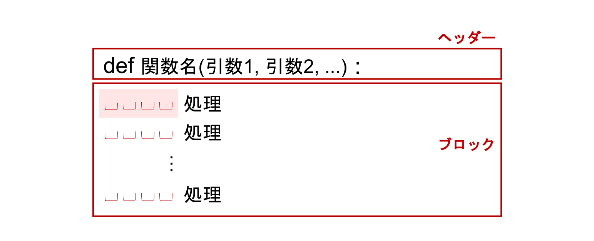

関数#
何かひとまとまりの処理を書いた際には、その処理のためのコードをまとめて、プログラム全体の色々な箇所から再利用できるようにしておくと、便利な場合があります。 ここでは、処理をひとまとめにする方法の一つとして関数 (function) を定義する方法を紹介します。
関数を定義する#

例えば、受け取った値を 2 倍して表示する関数を作ってみましょう。
関数を定義するには、まず名前を決める必要があります。
今回は double() という名前の関数を定義してみます。
関数も制御構文と同じくヘッダーとブロックを持っています。
# 関数 double() の定義
def double(x):
print(2 * x)
関数は定義されただけでは実行されません。 定義した関数を使用するためには、定義を行うコードとは別に、実行を行うコードが必要です。
# 関数の実行
double(3)
6
double(5)
10
double(1.5)
3.0
double(x) における x のように、関数に渡される変数や値のことを引数 (argument) といいます。
上の例は、名前が double で、1つの引数 x をとり、2 * x という計算を行い、その結果を表示しています。
複数の引数をとる関数#
複数の引数をとる関数を定義する場合は、関数名に続く () の中に、カンマ , 区切りで引数名を並べます。
例えば、引数を 2 つとり、足し算を行う関数 add() を作ってみましょう。
# 関数の定義
def add(a, b):
print(a + b)
# 関数の実行
add(1, 2)
3
add(3, 2.5)
5.5
add(1, -5)
-4
今回の double() や add() は定義を行い自作した関数ですが、Python には予め多くの関数が定義されています。
そのような関数を組み込み関数 (built-in function) と呼びます。
すでに使用している print() や len(), range() などが、これに該当します。
組み込み関数の一覧はこちらで確認することができます。
引数をとらない関数#
引数をとらない関数を定義する場合でも、関数名の後に () を加える必要があります。
例えば、実行するとメッセージを表示する関数を定義して、実行してみましょう。
# 引数のない関数の定義
def hello():
print('Chainerチュートリアルにようこそ')
# 引数のない関数の実行
hello()
Chainerチュートリアルにようこそ
引数のデフォルト値#
引数には、あらかじめ値を与えておくことができます。 これは、引数をとる関数を定義する際に、何も引数に値が渡されなかったときにどのような値がその引数に渡されたことにするかをあらかじめ決めておける機能で、その値のことをデフォルト値と呼びます。
例えば、上の hello() という関数に、message という引数をもたせ、そこにデフォルト値を設定しておきます。
def hello(message='Chainerチュートリアルにようこそ'):
print(message)
この関数は引数に何も与えずに呼び出すと、「Chainerチュートリアルにようこそ」というメッセージを表示し、引数に別な値が渡されると、その値を表示します。
hello()
Chainerチュートリアルにようこそ
hello('Welcome to Chainer tutorial')
Welcome to Chainer tutorial
デフォルト値が与えられていない引数は、関数呼び出しの際に必ず何らかの値が渡される必要がありますが、デフォルト値を持つ場合は、何も指定しなくても関数を呼び出すことができるようになります。
返り値のある関数#
上で定義した足し算を行う関数 add() では、計算結果を表示するだけで、計算結果を呼び出し元に戻していませんでした。
そのため、このままでは計算結果を関数の外から利用することができません。
そこで、add() 関数の末尾に return 文を追加して、計算結果を呼び出し元に返すように変更してみましょう。
# 返り値のある関数の定義
def add(a, b):
return a + b
このように、呼び出し元に返したい値を return に続いて書くと、その値が add() 関数を呼び出したところへ戻されます。
return で返される値のことを返り値 (return value) と言います。
以下に、計算結果を result という変数に格納し、表示する例を示します。
result = add(1, 3)
result
4
計算結果が result に格納されているので、この結果を用いてさらに別の処理を行うことができます。
result = add(1, 3)
result_doubled = result * 2
result_doubled
8
また、返り値は「呼び出し元」に返されると書きました。
この「呼び出し元」というのは、関数を呼び出す部分のことで、上のコードは add(1, 3) の部分が 4 という結果の値になり、それが左辺の result に代入されています。
これを用いると、例えば「2 と 3 を足した結果と、1 と 3 を足した結果を、掛け合わせる」という計算が、以下のように書けます。
add(2, 3) * add(1, 3)
20
変数のスコープ#
関数の中で定義した変数は基本的には関数の外では利用できません。 例えば、以下の例を見てみましょう。
a = 1
# 関数の内部で a に 2 を代入
def change():
a = 2
change()
a
1
関数の外で a = 1 と初期化した変数と同じ名前の変数に対して、change() 関数の内部で a = 2 という代入を行っているにもかかわらず、change() 関数の実行後にも関数の外側では a の値は 1 のままになっています。
関数の外側で定義された変数 a に、関数内部での処理が影響していないことがわかります。
なぜこうなるかというと、関数の中で変数に値が代入されるとき、その変数はその関数のスコープ (scope) でだけ有効なローカル変数になり、関数の外にある同じ名前の変数とは別のものを指すようになるためです。
スコープとは、その変数が参照可能な範囲のことです。
上の例では、a = 2 の代入を行った時点でchange() 関数のスコープに a という変数が作られ、change() 関数の中からは a といえばこれを指すようになります。関数から抜けると、a は 1 を値に持つ外側の変数を指すようになります。
ただし、代入を行わずに、参照するだけであれば、関数の内側から外側で定義された変数を利用することができます。
a = 1
def change():
print('From inside:', a)
change()
print('From outside:', a)
From inside: 1
From outside: 1
この場合は、change() 関数のスコープには a という変数は作られないので、関数の中で a といえば外側で定義された変数を指します。
関数の外で定義された変数はグローバル変数と呼ばれます。
グローバル変数は、特に特別な記述を要せず参照することはできますが、関数の中で代入を行う場合は global 文を使用する必要があります。
ただ、スコープ外の変数（グローバル変数）を変更することは推奨されないためチュートリアルでは省略します。